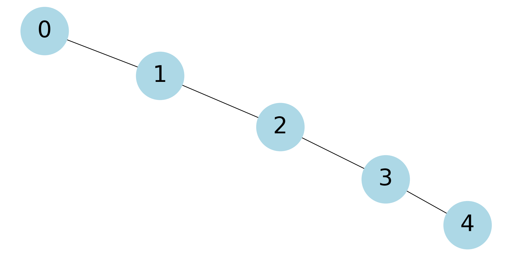

Code
source("../_globals.r")Combined meeting: Sections 02, 03, and 04
source("../_globals.r")cb_palette = ["#E69F00", "#56B4E9", "#009E73", "#F0E442", "#0072B2", "#D55E00", "#CC79A7"]
from IPython.display import Markdown
def disp(df, floatfmt='g', include_index=True):
return Markdown(
df.to_markdown(
floatfmt=floatfmt,
index=include_index
)
)
def summary_to_df(summary_obj, corner_col = ''):
reg_df = pd.DataFrame(summary_obj.tables[1].data)
reg_df.columns = reg_df.iloc[0]
reg_df = reg_df.iloc[1:].copy()
# Save index col
index_col = reg_df['']
# Drop for now, so it's all numeric
reg_df.drop(columns=[''], inplace=True)
reg_df = reg_df.apply(pd.to_numeric)
my_round = lambda x: round(x, 2)
reg_df = reg_df.apply(my_round)
numeric_cols = reg_df.columns
# Add index col back in
reg_df.insert(loc=0, column=corner_col, value=index_col)
# Sigh. Have to escape | characters?
reg_df.columns = [c.replace("|","\|") for c in reg_df.columns]
return reg_df\[ \DeclareMathOperator*{\argmax}{argmax} \DeclareMathOperator*{\argmin}{argmin} \newcommand{\bigexpect}[1]{\mathbb{E}\mkern-4mu \left[ #1 \right]} \newcommand{\definedas}{\overset{\text{defn}}{=}} \newcommand{\definedalign}{\overset{\phantom{\text{defn}}}{=}} \newcommand{\eqeventual}{\overset{\text{eventually}}{=}} \newcommand{\expect}[1]{\mathbb{E}[#1]} \newcommand{\expectsq}[1]{\mathbb{E}^2[#1]} \newcommand{\fw}[1]{\texttt{#1}} \newcommand{\given}{\mid} \newcommand{\green}[1]{\color{green}{#1}} \newcommand{\heads}{\outcome{heads}} \newcommand{\iqr}{\text{IQR}} \newcommand{\kl}{\text{KL}} \newcommand{\lik}{\mathcal{L}} \newcommand{\mle}{\textsf{ML}} \newcommand{\orange}[1]{\color{orange}{#1}} \newcommand{\outcome}[1]{\textsf{#1}} \newcommand{\param}[1]{{\color{purple} #1}} \newcommand{\paramDist}{\param{\boldsymbol\theta_\mathcal{D}}} \newcommand{\pgsamplespace}{\{\green{1},\green{2},\green{3},\purp{4},\purp{5},\purp{6}\}} \newcommand{\prob}[1]{P\left( #1 \right)} \newcommand{\purp}[1]{\color{purple}{#1}} \newcommand{\red}[1]{\color{red}#1} \newcommand{\spacecap}{\; \cap \;} \newcommand{\spacewedge}{\; \wedge \;} \newcommand{\tails}{\outcome{tails}} \newcommand{\Var}[1]{\text{Var}[#1]} \newcommand{\bigVar}[1]{\text{Var}\mkern-4mu \left[ #1 \right]} \]
Today’s Planned Schedule:
| Start | End | Topic | Recording | |
|---|---|---|---|---|
| Lecture | 12:30pm | 2:00pm | Association Rule Mining → | |
| Break! | 2:00pm | 2:10pm | ||
| 2:10pm | 3:00pm | ARM Lab → |

| node_id | label |
|---|---|
| 1 | Bulbasaur |
| 2 | Ivysaur |
| \(\vdots\) | \(\vdots\) |
| 9 | Blastoise |
| 83 | Farfetch’d |
| edge_id | source | target | weight |
|---|---|---|---|
| 0 | 1 | 2 | 16 |
| 1 | 2 | 3 | 32 |
| 2 | 4 | 5 | 16 |
| 3 | 5 | 6 | 36 |
| 4 | 7 | 8 | 16 |
| 5 | 8 | 9 | 36 |
import networkx as nx
import matplotlib.pyplot as plt
G = nx.DiGraph()
G.add_nodes_from(
[("Bulbasaur", dict(subset=1)), ("Ivysaur", dict(subset=1)), ("Venusaur", dict(subset=1)),
("Charmander", dict(subset=2)), ("Charmeleon", dict(subset=2)), ("Charizard", dict(subset=2)),
("Squirtle", dict(subset=3)), ("Wartortle", dict(subset=3)), ("Blastoise", dict(subset=3)),
("Farfetch'd", dict(subset=4))]
)
G.add_edge("Bulbasaur", "Ivysaur", weight=16)
G.add_edge("Ivysaur", "Venusaur", weight=32)
G.add_edge("Charmander", "Charmeleon", weight=16)
G.add_edge("Charmeleon", "Charizard", weight=36)
G.add_edge("Squirtle", "Wartortle", weight=16)
G.add_edge("Wartortle", "Blastoise", weight=36)
plt.figure(figsize=(6,7))
#layout = nx.circular_layout(G)
#layout = nx.spiral_layout(G)
#layout = nx.kamada_kawai_layout(G)
#layout = nx.random_layout(G)
#layout = nx.shell_layout(G)
layout = nx.multipartite_layout(G)
nx.draw_networkx_nodes(G, layout, node_size=4000, node_color='white', edgecolors='black')
nx.draw_networkx_labels(G, layout, font_size=10);
nx.draw_networkx_edges(G, layout, node_size=4000, arrows=True, arrowsize=30)
#layout = nx.draw_circular(G, with_labels=True, node_size=2500, arrowsize=25)
edge_labels = nx.get_edge_attributes(G, "weight")
nx.draw_networkx_edge_labels(G, layout, edge_labels);
plt.margins(x=0.2, y=0.1)
plt.show()import networkx as nx
import matplotlib.pyplot as plt
complete = nx.complete_graph(5)
nx.draw_circular(
complete, with_labels = True,
node_color = 'lightblue',
node_size = 3000,
font_size = 32
)
plt.tight_layout()
plt.show()
import networkx as nx
import matplotlib.pyplot as plt
B = nx.complete_bipartite_graph(4, 5)
top = nx.bipartite.sets(B)[0]
pos = nx.bipartite_layout(B, top)
nx.draw(
B, pos=pos, with_labels=True,
node_color = 'lightblue',
node_size = 4000,
font_size = 32
)
plt.margins(y=0.1)
plt.show()import networkx as nx
import matplotlib.pyplot as plt
path_graph = nx.path_graph(5)
nx.draw(
path_graph, with_labels = True,
node_color = 'lightblue',
node_size = 4500,
font_size = 32
)
plt.margins(y=0.1)
plt.show()
import networkx as nx
import matplotlib.pyplot as plt
path_graph = nx.cycle_graph(5)
nx.draw(
path_graph, with_labels = True,
node_color = 'lightblue',
node_size = 4500,
font_size = 32
)
plt.margins(y=0.1)
plt.show()
| id | items |
|---|---|
| 1 | Milk, Bread, Fruit |
| 2 | Butter, Eggs, Fruit |
| 3 | Beer, Diapers |
| 4 | Milk, Bread, Butter, Eggs, Fruit |
| 5 | Bread |
| id | Milk | Bread | Butter | Beer | Diapers | Eggs | Fruit |
|---|---|---|---|---|---|---|---|
| 1 | 1 | 1 | 0 | 0 | 0 | 0 | 1 |
| 2 | 0 | 0 | 1 | 0 | 0 | 1 | 1 |
| 3 | 0 | 0 | 0 | 1 | 1 | 0 | 0 |
| 4 | 1 | 1 | 1 | 0 | 0 | 1 | 1 |
| 5 | 0 | 1 | 0 | 0 | 0 | 0 | 0 |
import numpy as np
np.random.seed(5000)
basket_graph = nx.Graph()
nodes = ['Milk','Bread','Butter','Beer','Diapers','Eggs','Fruit']
basket_graph.add_edge('Milk','Bread',weight=2)
basket_graph.add_edge('Milk','Fruit',weight=2)
basket_graph.add_edge('Bread','Fruit',weight=2)
basket_graph.add_edge('Butter','Eggs',weight=2)
basket_graph.add_edge('Butter','Fruit',weight=2)
basket_graph.add_edge('Eggs','Fruit',weight=2)
basket_graph.add_edge('Beer','Diapers',weight=1)
basket_graph.add_edge('Milk','Butter',weight=1)
basket_graph.add_edge('Milk','Eggs',weight=1)
basket_graph.add_edge('Bread','Butter',weight=1)
basket_graph.add_edge('Bread','Eggs',weight=1)
spring_pos = nx.spring_layout(
basket_graph,
#pos = {'Fruit': (0.5,0.3), 'Beer': (0.5,0.8)},
#fixed = ['Fruit','Beer'],
seed = 5000,
k = 2
)
nx.draw(
basket_graph, spring_pos, with_labels=True,
#node_color = 'lightblue',
node_size = 1200,
font_size = 16,
node_shape="s", node_color="none",
bbox=dict(facecolor="lightblue", edgecolor='black', boxstyle='round,pad=0.2')
)
edge_labels_dict=dict([((u,v,),d['weight']) for u,v,d in basket_graph.edges(data=True)])
edge_labels = nx.draw_networkx_edge_labels(basket_graph, pos=spring_pos, edge_labels=edge_labels_dict, font_size=14, bbox=dict(facecolor="white", edgecolor='none', boxstyle='round,pad=0.2'))
plt.gca().set_aspect('equal')
plt.margins(x = 0.4)
plt.show()
| ID | Milk | Bread | Butter | Beer | Diapers | Eggs | Fruit |
|---|---|---|---|---|---|---|---|
| 1 | 1 | 1 | 0 | 0 | 0 | 0 | 1 |
| 2 | 0 | 0 | 1 | 0 | 0 | 1 | 1 |
| 3 | 0 | 0 | 0 | 1 | 1 | 0 | 0 |
| 4 | 1 | 1 | 1 | 0 | 0 | 1 | 1 |
| 5 | 0 | 1 | 0 | 0 | 0 | 0 | 0 |
\[ \begin{align*} &\text{Conf}(\{\text{Milk}, \text{Bread}\} \Rightarrow \{\text{Butter}\}) \\ = &\frac{ \Pr({\color{purple}\{\text{Milk}, \text{Bread}, \text{Butter}\}}) }{ \Pr({\color{green}\{\text{Milk}, \text{Bread}\}}) } = \frac{{\color{purple}\boxed{1/5}}}{{\color{green}\boxed{2/5}}} = \frac{1}{2} \end{align*} \]
| ID | Milk | Bread | Butter | Beer | Diapers | Eggs | Fruit |
|---|---|---|---|---|---|---|---|
| 1 | 1 | 1 | 0 | 0 | 0 | 0 | 1 |
| 2 | 0 | 0 | 1 | 0 | 0 | 1 | 1 |
| 3 | 0 | 0 | 0 | 1 | 1 | 0 | 0 |
| 4 | 1 | 1 | 1 | 0 | 0 | 1 | 1 |
| 5 | 0 | 1 | 0 | 0 | 0 | 0 | 0 |
\[ \text{Lift}(X \Rightarrow Y) = \frac{\text{Supp}(X \cap Y)}{\text{Supp}(X) \cdot \text{Supp}(Y)} \] * \(\underbrace{\{\text{Milk}, \text{Bread}\}}_{X} \Rightarrow \underbrace{\{\text{Butter}\}}_{Y}\) has a lift of
\[ \frac{\text{Supp}(X \cap Y)}{\text{Supp}(X) \cdot \text{Supp}(Y)} = \frac{{\color{purple}\boxed{1/5}}}{{\color{green}\boxed{2/5}} \cdot {\color{orange}\boxed{2/5}}} = \frac{5}{4} \]
| ID | Milk | Bread | Butter | Beer | Diapers | Eggs | Fruit |
|---|---|---|---|---|---|---|---|
| 1 | 1 | 1 | 0 | 0 | 0 | 0 | 1 |
| 2 | 0 | 0 | 1 | 0 | 0 | 1 | 1 |
| 3 | 0 | 0 | 0 | 1 | 1 | 0 | 0 |
| 4 | 1 | 1 | 1 | 0 | 0 | 1 | 1 |
| 5 | 0 | 1 | 0 | 0 | 0 | 0 | 0 |
\[ \text{PMI}(w_1, w_2) = \log_2\left[ \frac{\Pr(w_1w_2)}{\Pr(w_1)\cdot \Pr(w_2)} \right] \]
\[ \begin{align*} \text{PMI}(\text{Puerto}, \text{Rico}) = \log_2\left[\frac{f(\text{Puerto Rico})}{f(\text{Puerto})f(\text{Rico})}\right] = \log_2\left[ \frac{6278}{11282 \cdot 8332} \right] &\approx -13.87 \\ \text{PMI}(\text{Hong}, \text{Kong}) = \log_2\left[ \frac{f(\text{Hong Kong})}{f(\text{Hong})f(\text{Kong})} \right] = \log_2\left[ \frac{14141}{15959 \cdot 16446} \right] &\approx -14.18 \\ \text{PMI}(\text{Equatorial}, \text{Guinea}) = \log_2\left[ \frac{f(\text{Equatorial Guinea})}{f(\text{Equatorial})f(\text{Guinea})} \right] = \log_2\left[ \frac{237}{1505 \cdot 4893} \right] &\approx -14.92 \\ \text{PMI}(\text{New}, \text{York}) = \log_2\left[ \frac{f(\text{New York})}{f(\text{New})f(\text{York})} \right] = \log_2\left[ \frac{264228}{1371071 \cdot 270262} \right] &\approx -20.42 \\ \text{PMI}(\text{and}, \text{the}) = \log_2\left[ \frac{f(\text{and the})}{f(\text{and})f(\text{the})} \right] = \log_2\left[ \frac{1493660}{24814660 \cdot 50067877} \right] &\approx -29.63 \end{align*} \]

\[ R = \sum_{k=1}^{d-1}\binom{d}{k} \cdot \sum_{j=1}^{d-k}\binom{d-k}{j} = 3^d - 2^{d + 1} + 1 \]
mlxtenddataset = [['Milk', 'Onion', 'Nutmeg', 'Kidney Beans', 'Eggs', 'Yogurt'],
['Onion', 'Nutmeg', 'Kidney Beans', 'Eggs', 'Yogurt'],
['Milk', 'Apple', 'Kidney Beans', 'Eggs'],
['Milk', 'Corn', 'Kidney Beans', 'Yogurt'],
['Corn', 'Onion', 'Onion', 'Kidney Beans', 'Ice cream', 'Eggs']]
import pandas as pd
from mlxtend.preprocessing import TransactionEncoder
te = TransactionEncoder()
te_ary = te.fit(dataset).transform(dataset)
df = pd.DataFrame(te_ary, columns=te.columns_)
disp(df)| Apple | Corn | Eggs | Ice cream | Kidney Beans | Milk | Nutmeg | Onion | Yogurt | |
|---|---|---|---|---|---|---|---|---|---|
| 0 | 0 | 0 | 1 | 0 | 1 | 1 | 1 | 1 | 1 |
| 1 | 0 | 0 | 1 | 0 | 1 | 0 | 1 | 1 | 1 |
| 2 | 1 | 0 | 1 | 0 | 1 | 1 | 0 | 0 | 0 |
| 3 | 0 | 1 | 0 | 0 | 1 | 1 | 0 | 0 | 1 |
| 4 | 0 | 1 | 1 | 1 | 1 | 0 | 0 | 1 | 0 |
from mlxtend.frequent_patterns import apriori
apriori_df = apriori(df, min_support=0.6, use_colnames=True)
apriori_df['length'] = apriori_df['itemsets'].apply(len)
format_dict = {
'support': lambda x: format(x, '.2f'),
'itemsets': ', '.join
}apriori_df.style.format(format_dict)| support | itemsets | length | |
|---|---|---|---|
| 0 | 0.80 | Eggs | 1 |
| 1 | 1.00 | Kidney Beans | 1 |
| 2 | 0.60 | Milk | 1 |
| 3 | 0.60 | Onion | 1 |
| 4 | 0.60 | Yogurt | 1 |
| 5 | 0.80 | Kidney Beans, Eggs | 2 |
| 6 | 0.60 | Onion, Eggs | 2 |
| 7 | 0.60 | Milk, Kidney Beans | 2 |
| 8 | 0.60 | Onion, Kidney Beans | 2 |
| 9 | 0.60 | Yogurt, Kidney Beans | 2 |
| 10 | 0.60 | Onion, Kidney Beans, Eggs | 3 |
rules_df = apriori_df[ (apriori_df['length'] >= 2) & (apriori_df['support'] >= 0.8) ].copy()
rules_df.style.format(format_dict)| support | itemsets | length | |
|---|---|---|---|
| 5 | 0.80 | Kidney Beans, Eggs | 2 |
library(arules)
library(arulesViz)
library(plotly)market_basket <- list(
c("apple", "beer", "rice", "meat"),
c("apple", "beer", "rice"),
c("apple", "beer"),
c("apple", "pear"),
c("milk", "beer", "rice", "meat"),
c("milk", "beer", "rice"),
c("milk", "beer"),
c("milk", "pear")
)
names(market_basket) <- paste("T", c(1:8), sep="");
transactions <- as(market_basket, "transactions")
inspect(transactions) items transactionID
[1] {apple, beer, meat, rice} T1
[2] {apple, beer, rice} T2
[3] {apple, beer} T3
[4] {apple, pear} T4
[5] {beer, meat, milk, rice} T5
[6] {beer, milk, rice} T6
[7] {beer, milk} T7
[8] {milk, pear} T8 rules <- apriori(
transactions,
parameter = list(
supp = 0.3,
conf = 0.5,
maxlen = 10,
minlen = 2,
target = "rules"
)
)Apriori
Parameter specification:
confidence minval smax arem aval originalSupport maxtime support minlen
0.5 0.1 1 none FALSE TRUE 5 0.3 2
maxlen target ext
10 rules TRUE
Algorithmic control:
filter tree heap memopt load sort verbose
0.1 TRUE TRUE FALSE TRUE 2 TRUE
Absolute minimum support count: 2
set item appearances ...[0 item(s)] done [0.00s].
set transactions ...[6 item(s), 8 transaction(s)] done [0.00s].
sorting and recoding items ... [4 item(s)] done [0.00s].
creating transaction tree ... done [0.00s].
checking subsets of size 1 2 done [0.00s].
writing ... [6 rule(s)] done [0.00s].
creating S4 object ... done [0.00s].inspect(rules) lhs rhs support confidence coverage lift count
[1] {apple} => {beer} 0.375 0.7500000 0.50 1.000000 3
[2] {beer} => {apple} 0.375 0.5000000 0.75 1.000000 3
[3] {milk} => {beer} 0.375 0.7500000 0.50 1.000000 3
[4] {beer} => {milk} 0.375 0.5000000 0.75 1.000000 3
[5] {rice} => {beer} 0.500 1.0000000 0.50 1.333333 4
[6] {beer} => {rice} 0.500 0.6666667 0.75 1.333333 4 This last one never occurred to me until I learned French, where it’s called Les Pays-Bas 🤯↩︎